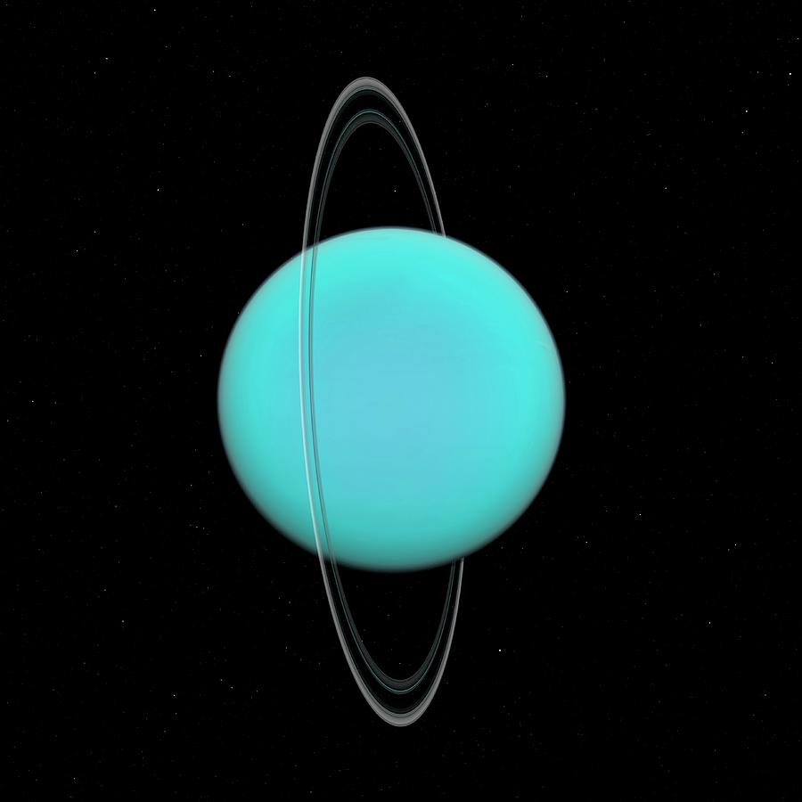

There are 8 planets in the solor system(not including drawf planets). The table shows the planet, it's photo, and the information.
| Planet name |
Planet picture |
Information |
| Mercury
| 
| Mercury is the closest to the sun and the fastest planet. It takes Mercury 88 days to rotate around the sun.
|
| Venus
| 
| Venus is the hottest planet, temp's reach about 862 degress in the day. It takes venus 255 days to go around the sun.
|
|
| Earth
| 
| Earth is where we live, the only planet so far with lots of life. It has so much water and oxygen, and it is a green planet. A year on Earth is 365 days long.
|
| Mars
| 
| Mars is on explorartion, many scientist have put rovers to see mars and tell if life can exit on the planet.
|
| Jupitar
|
| Jupitar is the biggest planet in Solar system, it takes over 400 days to rotate around the sun. It is known as a gass giant.
|
| Saturn
| 
| Saturn is a far away planet with many ice rings, it takes saturn over 8000 days to rotate around the sun.
|
| Uranus
| 
| Uranus is blue and is very very cold, it takes around 9000 days to rotate around the sun, the farther away we go the more time it takes.
|
| Neptune
| 
| Neptune is the fartest and the coldest planet from the sun taking over 10,000 days for a complete rotation around the sun.
|
Visit FAQ to learn more!